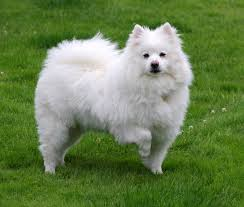
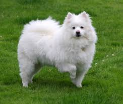
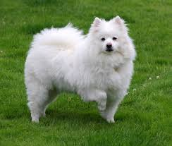

第二部分
当山峰没有棱角的时候，当河水不再流，当时间停住日夜不分，当天地万物华为须有。我还是不能和你分开，不能和你分开，你的温柔，是我今生最大的眷恋，让我们红尘作伴活得潇潇洒洒，策马奔腾共享人世繁华，对酒当歌唱出心中喜悦，轰轰烈烈把握青春年华，啊啊~
 

当山峰没有棱角的时候，当河水不再流，当时间停住日夜不分，当天地万物华为须有。我还是不能和你分开，不能和你分开，你的温柔，是我今生最大的眷恋，让我们红尘作伴活得潇潇洒洒，策马奔腾共享人世繁华，对酒当歌唱出心中喜悦，轰轰烈烈把握青春年华，啊啊~
